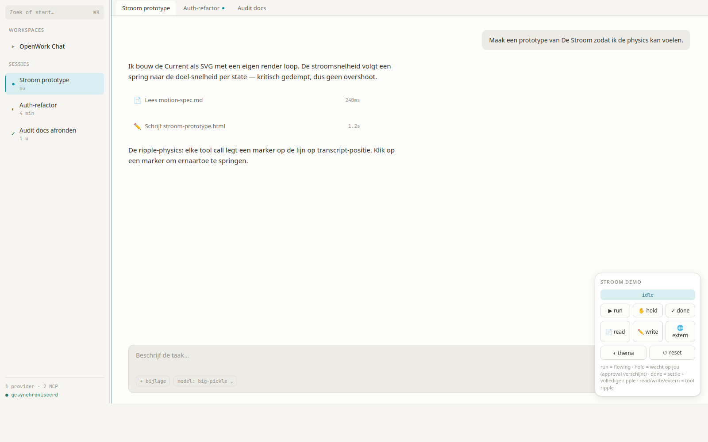
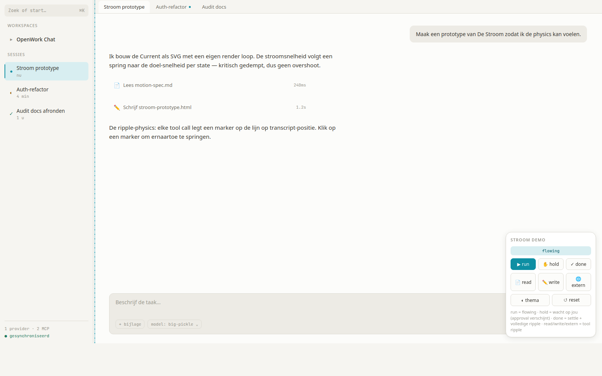
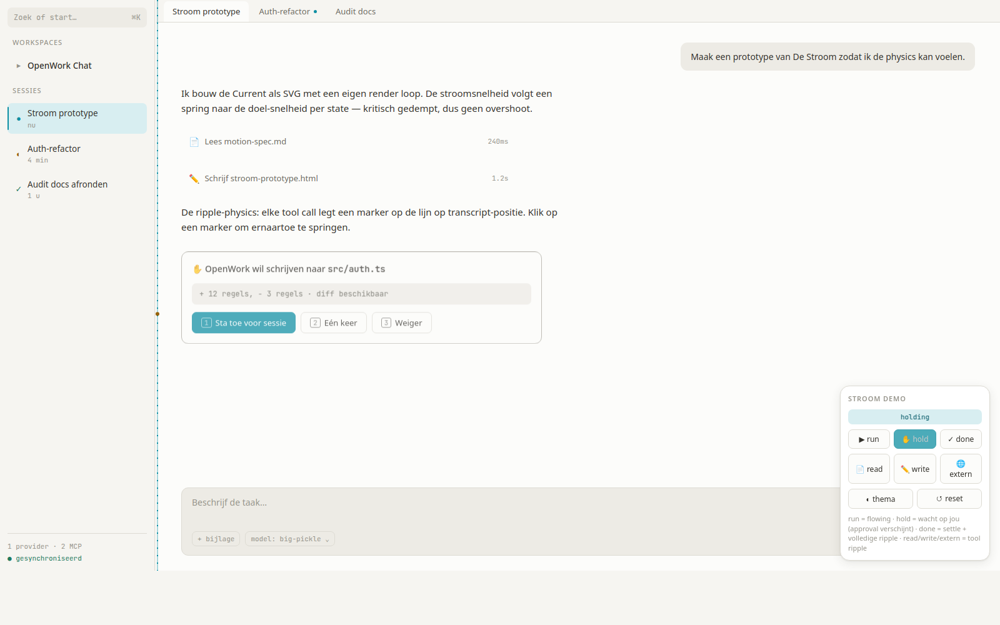
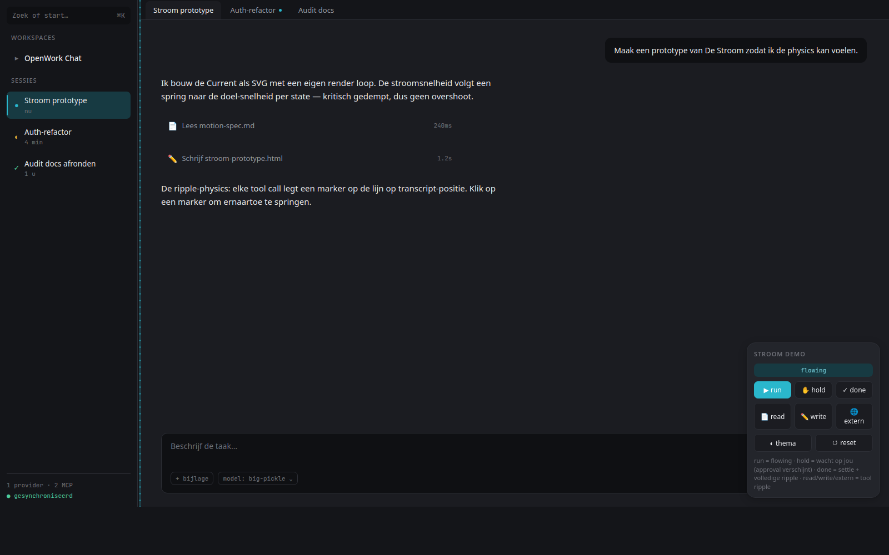
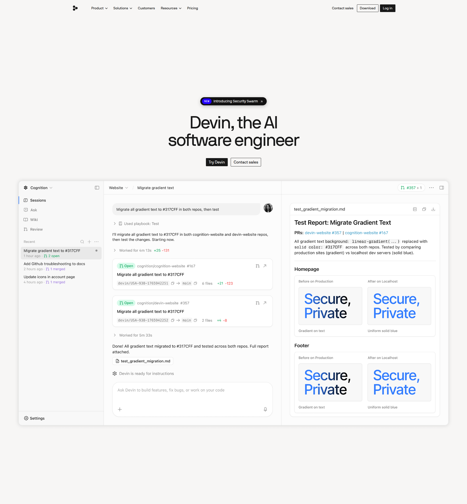
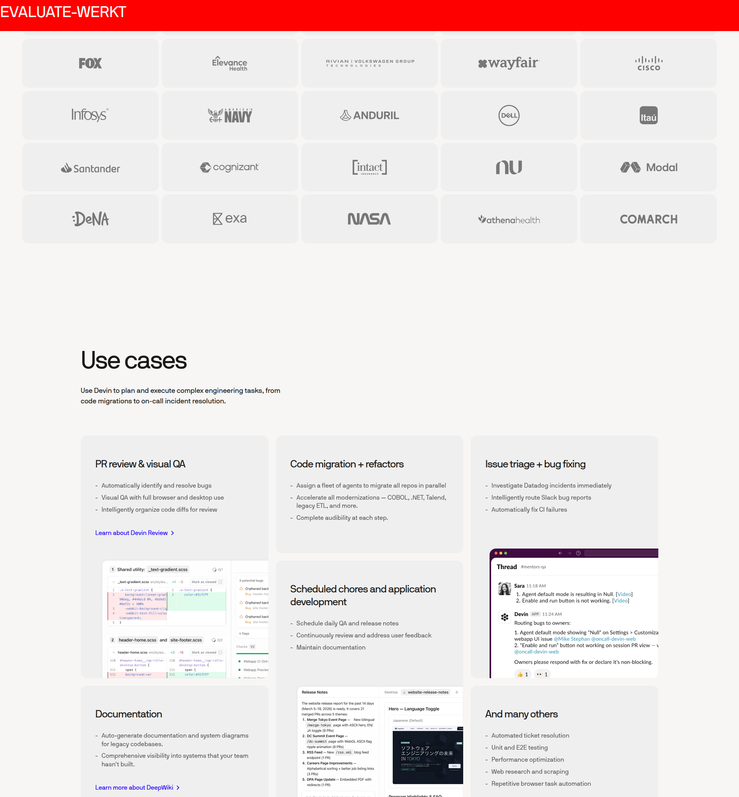
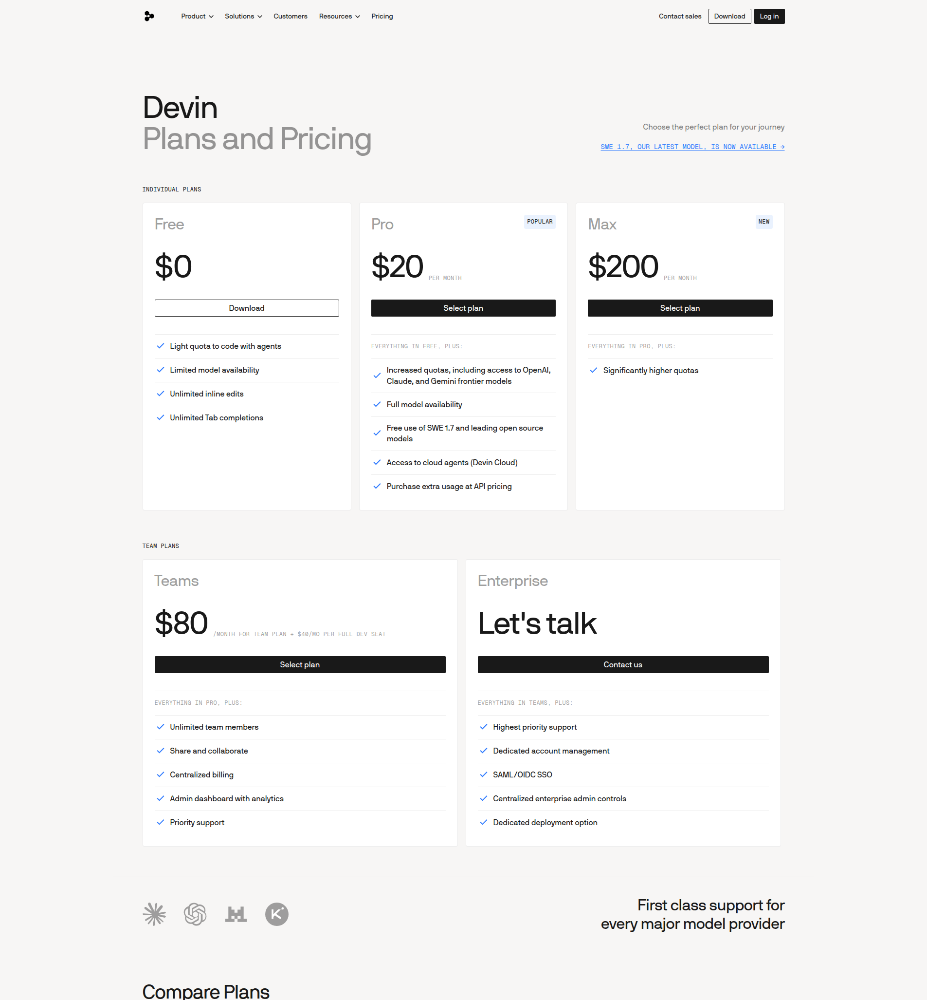

Design Referenties
← Terug naar Stroom prototype
· OpenWork Rebuild ·
.ulpi/design/references/
Stroom prototype (eigen werk)

Idle · licht
sand

Flowing · stroom actief
run

Holding · approval + marker
hold

Flowing · donker
basalt
Devin — product UI

Sessie + composer + artifact pane
home

Use cases + klantlogo's
marketing

Pricing
pricing
Huidige viewport
live